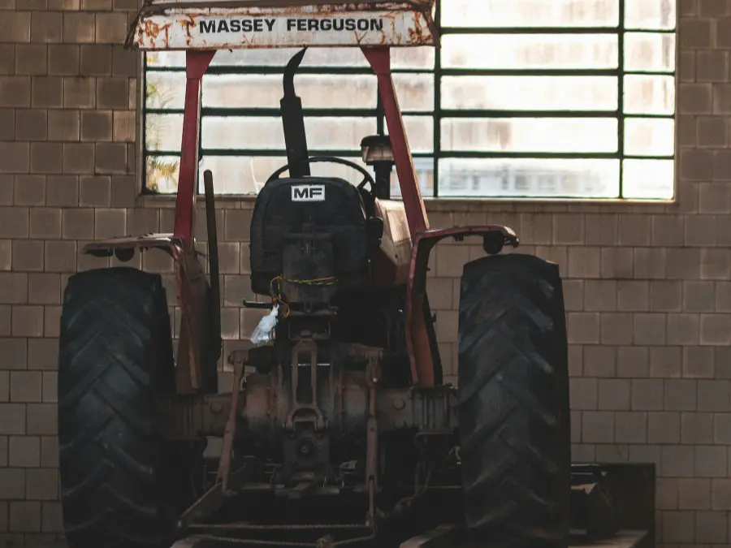
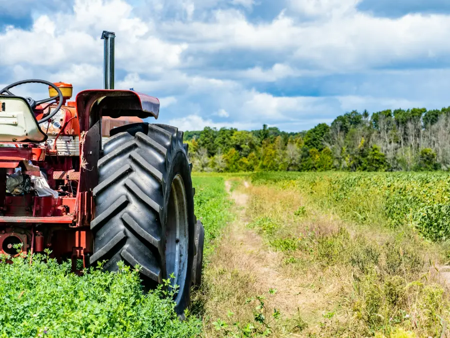
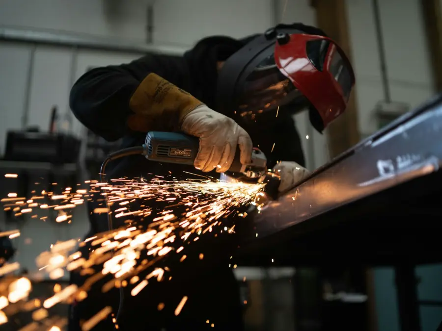

Mecánica pesada
Taller especializado en tractores y maquinaria pesada, con los repuestos originales y alternativos en el mismo lugar.
ConsultarRuta Nac. 86, km 1346,5 · Laguna Blanca, Formosa
Lun a Vie 7:30 a 12 y 14:30 a 19 · Sáb 7:30 a 12
Venta de repuestos agrícolas, taller de mecánica pesada, tornería y soluciones hidráulicas en Laguna Blanca, Formosa.
Desde 2001 junto al productor formoseño.
Lubricantes para motor, transmisión e hidráulico.
Llegamos a toda la provincia de Formosa.
Fabricamos la pieza que no se consigue.

2001Año en que abrimos
Agrosuna Servicios Agropecuarios trabaja desde 2001 en Laguna Blanca, Formosa, en la venta de repuestos para maquinaria agrícola y el servicio de taller.
En un mismo lugar reunimos el mostrador de repuestos, el taller de mecánica pesada, la tornería, la herrería y el sector de hidráulica. Por eso podemos hacernos cargo del problema completo: conseguir el repuesto, fabricar la pieza que falta y entregar la máquina trabajando.
Mano de obra propia en todos los sectores. Los trabajos de taller se programan con turno.
Taller especializado en tractores y maquinaria pesada, con los repuestos originales y alternativos en el mismo lugar.
Consultar
Fabricación y reparación de piezas, maquinado de precisión y roscas en todos los pasos. Hierro, grilón, poliamida y bronce.
Consultar
Reparación y fabricación de cilindros, mangueras a medida, bombas, conexiones, sellos y empaquetaduras.
Consultar
Piezas de hierro y soldaduras de todo tipo. Protecciones frontales y laterales, pisos y frentes para tractores.
Consultar
Cambio de aceite y filtros con lubricantes Shell, de los que somos distribuidores oficiales.
Consultar
Vamos hasta la máquina en toda la provincia y en zonas cercanas del Paraguay. El traslado se cotiza por kilómetro.
Consultar
Desmalezadoras, acoplados, tanques de agua y de combustible, cuchillas y piezas hechas a medida.
Consultar
Reparación de chapa y pintura completa para tractores, implementos y maquinaria.
ConsultarTenemos una gran variedad de repuestos originales y alternativos para tractores y maquinaria pesada. Si no está en stock lo conseguimos, y si no se consigue lo fabricamos.
Consultar por un repuestoRepuestos y servicio para las principales marcas de tractores, motores y transmisiones.
No dejamos que el cliente se vaya sin resolver su problema.
Cada reparación y cada repuesto salen con su garantía.
Sabemos que una máquina parada es plata que se pierde.
Presupuesto claro antes de empezar y trato directo.
Escribinos por WhatsApp, llamanos o dejanos tu consulta y te respondemos a la brevedad.
Fuera de horario atendemos solo urgencias de entrega de repuestos.